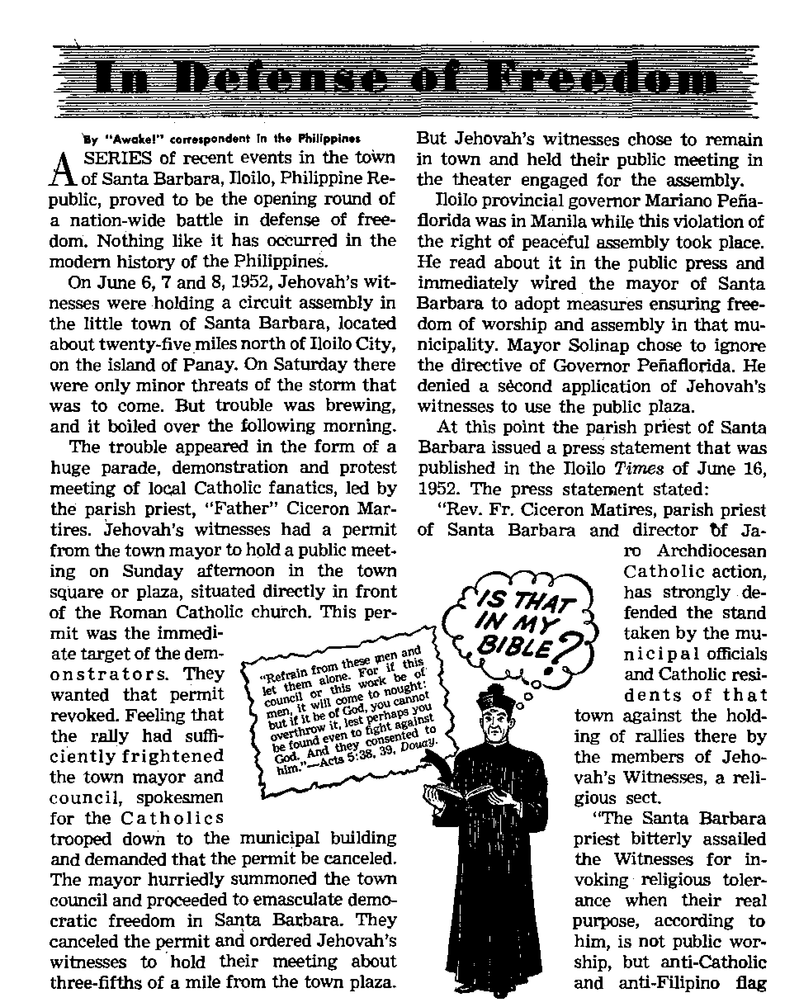

Missing links mean missing proofs, and bland assumptions fail to bridge the gaps
■"'—--------
Intolerant religionists in the Philippines work violence against Jehovah’s witnesses
Cantankerous ship of sandy seas
In what way does Jehovah answer prayer?
december 8,1952
THE MISSION OF THIS JOURNAL
News eourco that are able to keep you awake to the vital Issues of otir times must be unfettered by censorship and selfish Interests. “Awake 1” haS no fetter*?. It recognizes facts, faces facts, is free to publish facts. It Is not bound by political ambitions or obligations; it Is unhampered by advertisers whose toes must not be trodden on; it is unprejudiced by traditional creeds. This journal keeps itself free that it may speak freely to you. But it does not abuse its freedom. It maintains integrity io truth.
"Awake 1” uses the regular news channels, but la not dependent on them. Its own correspondents are on all continents, in scores of nations. From the four corners of the earth their uncensored, on-the'scenes reports come to you through these columns. This Journal's viewpoint is not narrow, but is International. It is read in many nations, in many languages, by persons of all ages. Through its pages many fields of knowledge pass in review-government, commerce, religion, history, geography, science, social conditions, natural wonders—why, its cover* age is as broad aa the earth and as high aa the heavens.
“Awake I” pledges itself to righteous principles, to exposing hidden foes and subtle dangers, to championing freedom for all, to comforting mourners and strengthening those disheartened by the failures of a delinquent world, reflecting sure hope for the establishment of a righteous New World.
Get acquainted with “AwakeI’* Keep awake by reading "Awake!”
Published Semimonthly By WATCHTOWER BIBLE AND TRACT SOCIETY, INC.
117 Adams Street Brooklyn 1, N. ¥., U. S. A,
N, H. KNOBS, PreHtfent Grant Suiteb, Secretary
Print Ing thia Itaue: 975,000
L*auw« •" whieii nte ■■guta h pihihM: StmlmcaUiIy—AfrikMiu. Endiib, Hnnlih, French, tiertnan, HhHandbt), Nocwetfim, gpanlrt), SvedUb, Monthly—Danlih, Greek, rortufnere, Ukrelnlin.
Otten Ywljr itDfcrlpUha Rate
Aa«rl«K U.S., 117 Adan BL, Brooklyn 1, N.Y. *1 Autndlft, 11 Berrefocd Rd,, Stnthflela, N.8.W. 8a CuidL 40 Irwin Are,, Toronto 5, Ontario *1 Ei|lM4, 04 Crtren Terran, London, W. 2 7i
Sho Afr|«a, Print* Big, P.Q. E^ntWobltlti,
TraBKtaal It
Five cants a copy
NesittaiMM ibould be lent to ofltei In y«r Mmr try in compliance with regiilattoB to guarantee safe delivery of money. BemltUncee are accepted at Brooklyn from countries where no office li located, by International nonney order only. Snbscriptlcin rata lo different amtrfea are hare itated in local currency. Notice of npIratlM (with renewal blank > la Mat at Jeaat two issues before subscription expire*. Clan|< of *4*nt criien sent to our odee may be expected effectlre witbin one month. Bend your old « well i> new address.
Entwrd h nennd-dut matin at Brooklyn, N. T Art of March 3, JH79 Primed la U. 8. A.
CONTENTS
Investigating the Bureau of Missing Links 3
Evolution's Fragile “Backbone”
A Real Bird Was the Archaeopteryx
Catholics Resort to “Mambo” Music
Religious Intolerance Shames Venlo 17
The Camel, Cantankerous Ship of Sandy Seas
Uranium—How Much of a Blessing for Mankind?
"Your Word Is Truth”
Jehovah's Witnesses Preach in All the Earth—Cyprus
yolump XXXIII Brooklyn, hhY.^December 8, 19&2 Number 23
Modern biology assumes the truth of evolution and evolution assumes the existence of countless “missing finks" to bridge innumerable natural species. Then why do the shy links remain missing? Pressed tor facts, evolutionists have nominated numerous candidates for the office of link between different life kinds- But a study of these readily shows why “missing” links make a better story than those they think they have found.
CURRENTLY it is popular to talk of government corruption and the need for investigating it. Might not the same feeling be justified toward educational and cultural fields? As attested in our last is1 sue, the theory of evolution slips by as as1 sunned truth to influence all general education and become the very basis for biology and its associated sciences. Yet such almost superstitious regard for the theory continues despite repeated admissions by prominent evolutionists past and present of their uncertainties, their incomplete evidence and often their deliberately faked evidence!. If this is not corruption of the worst sort, definitions of that word should be revised.
When evolutionists line up remains of many different forms of life, arrange them in the order most acceptable to their theory and place man at the end, they make their argument look convincing. And when they speak as Ernst Haeckel did when he said, “The chain of manifold animal forms which represent the ancestry of each higher organism, or even of man, according to the theory of descent, always form a connected whole,” they sound convincing.1 But no honest jury decides a case after hearing just one side. When examples are asked of the links that complete “the chain of manifold animal forms” down to modem man and evolution's offerings are made, do they truly prove to be such links? Or what do they prove to be? Evolutionists pretend to be very, very exacting in their research. Britain’s Sir Arthur Keith was once reported to have said: “No biologist could believe in angels unless he found the bones of one.” Do they exercise this same extreme demand for concrete proof before accepting a specimen as a missing link?
The problem of the start of life on earth is viewed by evolutionists in that curious way they have of saying nothing in a very authoritative manner. Spontaneous generation, or the fusing of the qualities of life in the bottom of incalculably ancient shallow seas, has long been discarded as inex-plainable and childish. Lecomte du Noiiy, in Human Destiny, contends and at the same time admits that “all living beings must have a common origin, and, as evolution exists, it is infinitely probable that the original strain was slightly differentiated living matter, still very close to inorganic matter, and not an already evolved organism. Indeed, this last hypothesis would leave unanswered the question as to how such a being could have been bom. We would be obliged to admit a previous evolution resulting in this being, and the same problem would reappear". So they do not know how life started but are nonetheless sure it had an evolutionary start. It had to have -since from the outset they assume that “evolution exists”.
Thus evolution secures the first span of its precarious suspension bridge on nothing. Follow now from span to span as it travels from invertebrates to vertebrates, from sea to land, from land to air, through the trees and finally down to modem man.
Evolution's Fragile “Backbone"
Among the invertebrates one is supposed to find a smooth line of ascent to the vertebrate level, according to evolutionary reasoning. But instead the impartial observer finds only distinct families having no tendency to blend together. The coelenterates, such as corals, sea anemones, sea fans, etc., present specialized structures not at all like higher life forms. The echinoderms, including starfish, sea urchins, sea cucumbers, sand dollars, etc., differ markedly in their well-developed organic systems. Similar differences from other invertebrates and the complete absence of tendencies to link with the vertebrates are found in arthropods and worms. Professor H. W. Clark states: “Out of this vast assemblage, comprising 8 great groups, or phyla, with about 36 classes, and thousands of species, one looks in vain for the links in the chain that would lead up to the higher animals.”2 But such a vast .bridge as from invertebrate to vertebrate cannot be allowed to pass without some trace of a link if there is to be anything at all to evolution.
* The Vew Diiuvkiiismj p. 198.
In a written debate with Douglas Dewar, British evolutionist H. S. Shelton attempts to describe the beginning of backbones, saying: “The first sign of the vertebrate column is the notochord—a gelatinous cylinder which forms in the place afterwards occupied by vertebrae. It happens that living creatures exist having no vertebrae, but possessing this dorsal notochord. Amphioxus is the best example.” He contended that vertebrate embryos displayed this harking back to invertebrate ancestors—passing through a stage of developing a notochord before development of the finished backbone. But Dewar replied that amphioxus and many fishes thrive on simply a cartilaginous notochord and that if all primitive vertebrates had possessed such a spinal stiffening, it was up to evolution to show why they bothered to develop a later bony structure. As for the notochord stage of vertebrate embryonic development, he pointed out that such was a necessary step until sufficient blood vessels developed to assist in bone building.2
Du Noiiy is able to offer nothing more conclusive on the origin of vertebrates, though he considers them “the most important group of the animal realm”. He stabs at amphioxus, along with a newer theory, that vertebrates sprang from the ostracoderms (“fishes with an armor of large bony plates around the head”), but says nothing final on either.! Many years ago Professor H. H. Newman of Chicago University listed five possibilities, including amphioxus, only to say in the end: “Certainly it cannot be claimed that the problem is solved, but at least we have examined the question, and have considered the various possibilities.”J And as
long as there are members of one family possessing features not drastically unlike certain features of another family, will it not be continually possible to name “possibilities’3? But whether any are probable is entirely another matter.
On the Trail of a Footprint
Next (though perhaps according to evolutionary time it would be only after untold ages), the time came when certain sea creatures, those living hear the shore lines, decided they wanted to walk! Doubters will be hushed by geologists who long ago discovered a footprint which appears to have been made by the first of the land dwellers. So sure were they it was even given a name, Protopoda, “firstfoot.” Of course, how they can be so sure it was made by the first land animal, even
Professor H. W. Clark points out that such fish does not have a simplified, evolutionary stage of lungs, but air sacs that are served by a very elaborate circulatory system. And furthermore, he delivers the deathblow by saying:
“The evolutionist sets the lung-fish at a much later period in geological history than the one in which the first land animal was supposed to have evolved. On every score the lung-fishes are rejected as possible transitional forms, and the evolutionist who uses them is wresting a part of his own theory in order to bolster up a weakness that is too apparent.”3
Ultramodern evolutionist Du Noiiy expresses agreement with this time argument and goes farther and deals a demolishing blow to “Protopoda” and to the proponents of the whole gasping, flopping
just one of the earliest land animals, or for that matter a land animal at all, they do not say. In his Vertebrate Zoology, Newman, again, calls this step “the greatest evolutionary crisis in vertebrate history”. In the geological period known as the Devonian the lungfishes are pic
1 u n g f 1 s h-t o-a m-phibian idea, saying: “Another strange thing is that . . . the terrestrial vertebrates seem to have developed before the marine vertebrates. We find amphibians represented by an important group of varied and giant forms, the Stegocephalia, at the beginning of the
tured stranded in rapidly drying pools. There in the mud of their receding pools they supposedly flopped their fins, gasped down great gulps of air, stimulating development of their air sacs, passed on this unbelievable torture to generations of descendants and finally produced an amphibian adaptable to land life with feet instead of fins. At this point many zealous evolution exponents will point excitedly to the modern lungfish for proof of the link. But Carboniferous period. Some of them were 'quadrupeds, others were serpentlike without a trace of limbs, still others had a skull three feet long. This great variety indicates a long line of ancestors. Footprints have been found in the Upper Devonian, which can be attributed to them. Amphibians, therefore, existed prior to the Carboniferous period and their, skeleton developed long before that of the fishes. All we can say is that both classes, fish and batrachi-ans, had a common ancestor. Who was he? We do not know/’4 It is irresistible to ask, How certain can a person be who does not know what he is certain of?
A Beal Bird Was the Archaeopteryx
Two factors next contrived to get the ground-going reptile into the air. The first of these, we are led by evolutionistic reasoning to believe, was the reptile’s restlessness. The second, we are forced to conclude from their presentation of “facts”, is the evolutionists’ imaginations! In his Origin of Birds (1926) Heilmann blithely describes the animal’s turning from terrestrial runner to arboreal climber, by ever longer leaps swooping “from branch to branch, from tree to tree, and from the trees to the ground”. The first toe gradually became a hind toe, able to clutch branches, hind limbs were drawn in closer to the body for leaping, and in Heilmann’s own incredible words: “The pressure of the air, acting like a stimulus, produces chiefly longish scales developing along the posterior edge of the forearm and the side edges of the flattened tail. By the friction of air, the outer edges of the scales become frayed, the frayings gradually changing into still longer horny processes, which in course of time become more and more feather-like, until the perfect feather is produced.”
Douglas Dewar treated Heilmann's contention with the humiliation it deserves when he observed: “The above does great credit to Mr. Heilmann’s powers of imagination." Even if acquired characteristics could be passed on to offspring, he confessed, “I am unable to believe that were a reptile, generation after generation, to spend twelve hours daily from the Cambrian onwards in leaping from tree to tree
* Destinyt p. 73.
the result would be the evolution of wings and feathers.”4
There simply had to be some trace of link in the space between this reptile-to-bird-by-way-of-calisthenics program, so evolutionists laid hold on the Archaeopteryx, earliest known bird fossil. Yet Archaeopteryx’s plumage rivals the most highly advanced flight and contour feathers of our most up-to-date birds. Certainly a form of down would be the expected thing on any primitive bird supposedly just in the stage of developing the first feathers. Not so with Archaeopteryx. Evolutionists cite its reptilian “tail”, its teeth, nonpneumatic bones and jointed forelimbs. But Dewar counters that these are not distinguishing signs between reptiles and other animals. The reliable reptile turtle has no teeth. Those extinct flying reptiles the pterodactyls had tails sometimes no longer than those of modem birds. Furthermore, those ancient fliers had pneumatic bones while some modem birds do not.t Read the opinion of the great French zoologist Villaton:
“As to the hand (of Archaeopteryx), the only reptilian features of this is that the metacarpals are not fused at the distal extremity, but this occurs in the ostrich; on the other hand, the hand could not be bent downwards as every hand is, but only sideways as in the case of true wings. What then is there truly intermediate in Archaeopteryx? It is not its perfectly developed feathers, its bipedalism entirely like that of a bird, or its head which, though provided with teeth, has the shape of that of a bird and the relative proportions of face and brain-case so different from those of reptiles of which the face greatly dominates the infinitely reduced brain-case. Archaeopteryx is a bird, as Dames and Deperet recognized. Its feathers indicate a warm-blooded animal Its comportment was that of a flightless bird and probably its wings served as a parachute. It was a kind of ratite, an aberrant form, as one can see, but most certainly not an intermediate between two Classes (reptiles and birds) as it is often represented to be.”5
Rather than a link between reptile and bird, Archaeopteryx is simply a bird less unlike a reptile than most birds. Du Nouy the evolutionist crushes out the last evolutionary flame here when he admits: "We are not even authorized to consider the exceptional case of the Archaeopteryx as a true link. By link, we mean a necessary stage of transition between classes such as reptiles and birds, or between smaller groups. An animal displaying characters belonging to two different groups cannot be treated as a true link as5 long as the intermediary stages have not been found, and as long as the mechanisms of transition remain unknown.”!
“ ‘Link5 Is a Dangerous Word”
Just so are we left impoverished for links between reptiles and mammals. Evolutionists sometimes refer to such extinct reptiles as the genus Cynognathus and ScymnognathusJ as possessing mammalian habits, thus proving to be reptile-mammal links. But in every reptile, living or extinct, certain unalterable reptilian features exist: a lower jaw of six bones compared with the mammals’ one and a comparatively simple hearing apparatus in the ear in contrast to the highly complicated ear of a mammal. To picture the creature in between existing while his means of eating and hearing were in such a mode of transition is, Dewar believes, one of the incredible assumptions of evolution.®
• des Etres VivantSj VlHaton, p, 109,
t Human Destin v, p. 72.
t Is Evolution Proved? pp5 105, 109,
® pp. 164, 165.
This brings up next the predicament in which a link between land mammal and whale would find itself. To conform to this phase of evolutionary contention the specimen would have to have a hipbone much too small to accommodate proper hind-leg locomotion for land travel and too large to permit the muscles necessary to move a whale’s tail to fit in place on the backbone. Thus the link in this case would be either a land mammal unable to walk or a whale unable to swim! Obviously we need not look far for its remains.
Even Berg, a zoologist once employed by the Soviet government (which adopted with Marxism official recognition of Darwinism), revealed in 1926 that the farther back modem knowledge of life delved the farther away any sign of missing links between basic life kinds seemed to retreat. Among the would-be transitional forms discounted by Berg as no such links at all were the lungfishes, the Acanthodii (supposed link between sharks and higher fishes) and, in the botanical field, the Bennettitales (between Gymnosperms, pinelike trees, and Dicotyledones, flowering plants).!
No reputable scientist will deny this vital absence of transitional forms of life between basic kinds. Darwin was painfully aware of this but was content to blame the earth for not preserving fossils of “intermediate forms between the classes in the same great kingdoms”.! Modern evolutionist Austin H. Clark grants that “all our evidence shows that the phyla or major groups of animals have maintained precisely the same relation with each other back to the time when the first evidences of life appear”, and that “the facts are that all of the fossils, even the very earliest of them, fall into existing major groups. This is indisputable”.6 The earliest fossils, those of the Cambrian period, according to-Brooks, “far from showing the simple unspecialized ancestors of modem animals are most intensely modem themselves in the zoological sense.”t Perhaps no line of supposed evolutionary descent exposes this difficulty more than that of the horse. Du Noiiy says on that:
“We have been able to establish the lineage of the horse by means of six intermediary stages, starting with the Hy-racotherium and the Eohippus of the Eocene period (about fifty million years ago) up to the modem horse. But each one of these intermediaries seems to have appeared ‘suddenly/ and it has not yet been possible, because of the lack of fossils, to reconstitute the passage between these intermediaries. Yet it must have existed. The known forms remain separated like the piers of a ruined bridge. We know that the bridge has been built, but only vestiges of the stable props remain. The continuity we surmise may never be established by facts.”t
Incidentally, Science News Letter of August 25, 1951, reported: “Professor T. S. Westall, Durham University geolo-
• TAe New A. H, Clark, pp. 104,
105.
? TAe Foundations of 1899, p. 216.
t Human Destiny, p. 95.
gist, told the British Association of Science at Edinburgh that the early classical evolutionary tree of the horse, beginning in the small dog-sized Eohippus and tracing directly to our present-day Equinus, was all wrong. The direct line of descendants of Eohippus led to a horselike animal Hypohippus, which became extinct and so ended the line.” The horse line was supposed to be one of evolution’s strongest, but this its best is acknowledged to be a blind alley.
While so many evolutionists of’the past have said so much so glibly dbout “a connected whole” in respect to the chain of animal descent, Du Noiiy frankly admits: “In the history of living beings the word links’ is a dangerous word. It can never be affirmed that a certain form is a real link.”6 The “bureau of missing links” has proved a sorry failure to evolution, not tracking down a single lost link, not even finding a starting point for life, thus leaving that critical point in mid-air unlinked to anything. Next, we invite our readers to note the predicament into which those evolutionists have fallen who have tried to contend for the most publicized link of all—that which supposedly produced modem man. Consideration of this will appear in an early issue.
“Witnessing calls lor visiting/1 said the First Baptist Reminder^ published September 19 by the First Baptist Church, Dallas, Texas. It continued: “The last words of Jesus to his followers were ‘Ye shall he my witnesses/ But are we His witnesses? Do we love Him enough for what He has done for us, to tell others of His love and great salvation from sin? If we witness for Him, we must go to the homes and visit for him. . . . He is counting on you and me to visit them and tell them about Him and invite and bring them to His church so they can hear the Gospel of Christ, The Master has no other plan. He must count on you. Witnessing calls for visiting.” But they refuse to witness through home visits.
propaganda, as shown by the fact that they are against all religions and salutes to national flags. . , .
"Last week, according to reports, about 5,000 peace-loving residents of the town, . . . held an indignation parade and rally, protesting against the scheduled public meeting of the Witnesses in the town plaza. . . .
"Mayor Antonio Solinap of Santa Barbara, heeding the voice of the people, called a special session of the municipal council and, with the concurrence of that body, revoked the permit of the Witnesses to meet in the town plaza and exchanged it with a permit to meet in another place, outside the poblacion.” The press statement went on to say that Governor Penaflorida "directed the town mayor, through Acting Governor Pedro Trono, to adopt measures to insure freedom of worship and assembly in Santa Barbara”, but that Mayor Solinap turned down a request by the witnesses to hold a meeting at the town plaza, because "he is the town executive and as long as the municipal council is behind him, together with the town inhabitants, he will not allow the Witnesses to hold a rally in Santa Barbara”.
The press account further stated: “ITie plea of Governor Penaflorida for religious tolerance, Fr. Martires said in a detailed statement to the Times today, must be noted by the Witnesses of Jehovah. Santa Barbara is a Catholic town and the Catholic faith of the people of that town must be respected. There must be no proselyting. The Catholics of Santa Barbara should not be divided and turned against their faith. The Catholic youth should not be tempted and waylaid by anti-Catholic doubletalk. ...
"The freedom of religion that must be protected in the present case, Fr. Martires said, is the freedom of the Catholic faith. . . . ‘The Witnesses of Jehovah may practice their religion the way they want; but they must not meddle with the rights of peoples already belonging to other faiths. Their freedom of speech may well be exercised by them among themselves and the people who may want to hear them; but they must remember that their freedom of speech ends where the freedom of hearing of other peoples begins.... It is sad that they, the minority, should superimpose their wishes on the legitimate rights of the majority. The Witnesses must stop proselyting in Santa Barbara and elsewhere in Catholic Philippines.’ ”
Having relieved himself of this windy dissertation, the priest wrote to the Philippines Free Press, In part he said:
“I am herewith sending you a copy of the press release of the Catholic Information Service.... I hope your Staff Member Leon O. Ty or Teodoro M. Locsin can weave a feature story around the data I am furnishing you. However, if this article be not possible, could we expect a few lines of publicity in your next issue of the Free Press? Dear Editor, Atty. Locsin was my schoolmate at the Ateneo de Manila from 1927 to 1932 and he may be willing to do my parishioners a favor!”
Staff Member Teodoro M. Locsin obliged the overanxious "Father” Martires, not with what he wanted, but with a scholarly write-up on "Freedom of Worship”, which occupied two full pages of the July 5 issue of the Philippines Free Press. After quoting in full all the remarkable press releases on the Santa Barbara incident, Mr. Locsin began his reply. Among other things he said: "It is difficult and painful to have to comment on these remarkable documents. It is certainly the first time we have heard of ‘freedom of hearing’ as a limitation to freedom of speech; it is, in fact, the first time we have heard of ‘freedom of hearing.’ We have always thought that a man was free to hear—or not hear, by the simple expedient of staying to listen or going away. At home, if one does not like to listen to what someone is saying over the radio, one simply turns it off. If one does not like to hear what someone will say at the town plaza, one does not go to the plaza but stays home. ‘Freedom of hearing’ is certainly new to us. . . .
"The human mind is capable of strange distortions. To prevent another from expressing his religious convictions and then to ask him to ‘practice tolerance’ is to strike a man down and to lecture him afterward on the virtues of non-violence. ... The Witnesses are further enjoined not to ‘disturb the Catholic faith of the people of Santa Barbara’.
“Under this principle the people of Mindanao and other predominantly nonChristian regions of the Philippines may legitimately demand that Catholics should not disturb the non-Christian faiths of those regions. The Catholic Church would have no alternative, if it supports such a view, but to recall all its missionaries from their assignments. Elementary decency demands that one should not do unto others what one would not have others do unto one. . . .
“It seems incredible that the Catholic population of Santa Barbara should react so violently, in such an almost panic-stricken manner to the attempt by the Witnesses of Jehovah to hold a meeting in the town. The Catholic Church is more than 1,900 years old, is founded on a rock. Surely it has nothing to fear from an organization such as the Witnesses. If the Witnesses could disturb the people of Santa Barbara in their faith by merely holding a meeting, they must be a people of little faith.”
Other leading newspapers met the challenge to freedom with editorials which laid bare the root of the trouble. Under the title "Tolerance for Minorities”, the Daily Mirror of June 18 said: “The Witnesses.are putting our professed belief in tolerance to a test.... It is easy enough to say we are tolerant, when we are not called upon to demonstrate it But let a minority like the Witnesses challenge our beliefs, and we show our true colors.” Again on July 3 the same paper came out with an editorial “Justice for Witnesses”, in which the following was included: “Gov. Mariano Pefia-florida, himself an active Catholic and a member of the Knights of Columbus, has informed the Witnesses that he will uphold their right of assembly in Santa Barbara. Perhaps this is what the situation has needed all along—a word from on high that the Witnesses are not dissidents but only a non-conformist minority.”
Catholics Resort to “Mambo” Music
But more than that was needed. Another public meeting in the plaza of Santa Barbara was scheduled by Jehovah’s witnesses, on July 13. Local Catholics set up eleven big loud-speakers in private homes adjoining the plaza. They rented the town’s power plant for three dollars an hour and cut off the power to the plaza. Jehovah’s witnesses were forced to use batteries to power their amplifier and carry the message over their three small loud-speakers. Their lecture was “jammed” by the eleven big loud-speakers’ playing “mambo” music. Although local police and the national Philippine Constabulary were on hand to maintain order, they allegedly replied that they were unable to abate the noise, "because there is no law prohibiting citizens from playing their radios.”
Commenting editorially on this the Daily Mirror of July 14 said: “This pronouncement will doubtless go down in history along with ‘Don’t shoot until you see the whites of their eyes’ and ‘I didn't know it was loaded.’ But for the moment,, the Witnesses may well wonder how heckling loudspeakers would have fared if politicians in-
stead of Witnesses had been meeting on the plaza. Let one dissenter give a single hoot, and he would go to the calaboose for sure. Especially if he were a Witness and the town were Santa Barbara.”
Archbishop Jose Cuenco tried to answer the newspaper charges of intolerance in Santa Barbara by a press release published in the Manila Times of July 16, in which he said: "If the Santa Barbara Catholics opened their radios and loudspeakers in order to drown out the recent meeting of the Witnesses in the town plaza, it was more in self-defense than because of intolerance.” Thus a high church dignitary put his stamp of approval on the intolerance in Santa Barbara.
Attack on Freedom Foiled
But the major newspapers of the Philippines have been unanimous in condemning this shameful attack on freedom. And the vast publicity given to the event has borne fruit. An attempt to violate another meeting of Jehovah's witnesses in Tigbauan, Iloilo, on July 20 was foiled by an alert and fearless town mayor. The Manila Times of July 21 reported on its front page: "Acts of religious intolerance in the town of Tigbauan were foiled by municipal authorities this afternoon. While the orators of Jehovah’s Witnesses were delivering their Sunday sermons before an assembled group at the town plaza fronting the Catholic church this afternoon, the parish priest trained the church’s amplifier and blared ‘jazz music’, drowning out the orators’ voices.
"Mayor Gregorio Tuvilla, who authorized the Jehovah’s Witnesses meeting, sent his cops to the parish priest, Rev. Fr. Alfonso Tamonan, with the request that he stop the 'unnecessary racket/ Police Chief Cornelio Titos carried out the order. . . . Father Tamonan, after consulting with another priest visiting his parish, shut off the church amplifiers, thus allowing Jehovah’s Witnesses to carry on their services without further molestation,... Mayor Tuvilla assured the townspeople that as long as he is mayor he will not allow any practice of religious intolerance. He promised to safeguard the freedom of worship. He said he gave Jehovah’s Witnesses permit to hold a meeting at the town plaza, in front of the Catholic church every Sunday for the next four consecutive holidays.”
Commenting editorially on these repeated attempts to illegally disrupt the meetings of Jehovah’s witnesses, the Manila Evening News of July 21 gave this pointed warning to the Roman Catholic Church: “One aspect of the heckling, however, seems to merit looking into. It appears that the parish priests have been the leaders of the attempts to disrupt proceedings. . . . That members of the Catholic Church should find it necessary to resort to undemocratic means to stop meetings of rival secte is deplorable, to say the least It is even more deplorable that the Catholic hierarchy sent instructions, in view of the unfortunate incident in Santa Barbara, Iloilo, sometime ago, when a two-hour meeting of the same sect was effectively drowned out by amplifiers set up by Catholics in the town plaza. In a world where the Catholic Church is a recognized leader in the fight against tyranny and intolerance, such undemocratic acts shown by Church functionaries are out of place.” Let Catholics heed the wise counsel of Gamaliel, who cautioned the people not to be tpo hasty in mistreating. Jehovah’s witnesses. Said he; "Refrain from these men and let them alone. For if this council or this work be of men, it wall come to nought: But if it be of God, you cannot overthrow it, lest perhaps you be found even to fight against God. And they consented to him.” (Acts 5:38, 39, Douay} Jehovah’s witnesses will continue to preach.
By "Awoke!" ccrretpondenl In Panama
WHERE is the young lady who has not seen the man in the moon? or the “prince charming’’ who has not actually visualized the clear outline of the lady in the moon, only to have the fancy smashed like a bubble by the hard facts of science that such does not exist? But have you ever heard of the moon children?
These little fellows, strangely enough, do not live on the moon, but right here on earth, and a large number of them near the equator in one of the smallest provinces of the Republic of Panama. This tiny state of San Blas, with its perpetually clean, white sand beaches, extends from about sixty miles east of the Atlantic terminal of the Panama Canal for a distance of approximately one hundred and forty miles along the northern coast of Panama toward Colombia. Luxuriant palm trees, providing the ready-coined currency of the natives of the province, line the coast of this narrow ribbon of land no more than ten miles in width. Here dwell our little friends in the midst of their bronze-colored Indian brothers,, in a race striving to retain the same purity of blood and holding practically the same ideas as their ancestors of five hundred years ago.
The San Blas Indian is short of stature, with a large head, a very short neck and a well-developed thorax and back, in striking contrast with his short legs and small feet. The most incongruous members of the tribe are the albinos or little white Indians—the “moon children”, undoubtedly referred to in this manner because of the traditional belief that these fair chil7 dren are of partly celestial origin—offspring of the moon god and the Indian mother. Or as others say, the mother looking on the moon at the time of conception marked her child; or as some believe, they have been born under the sign of the moon and its consequent power.
These poor little creatures are really to be pitied. Little misshapen things, spotted and crooked with pasty white skin and stiff tow-colored hair that is about six or eight inches in length and inclined to curl, they occur about once in every four hundred of their copper-colored brothers. A fine, short, milk-white down covers their white bodies, adding to the abnormal whiteness of their skin. They are not so big as the other Indians and, what is strange, their eyelids bend and open in an oblong figure, pointing downward at the corners and forming an arch or figure of a crescent with the points downward. Their weak, pink eyes are habitually squinted and they cannot endure the bright rays of the sun, although they see well on moonlit nights, at which time they are all life and full of activity, running and skipping like deer, as fast and nimble as their copper-colored brothers, though not as strong and lusty, not as long-lived either. Comparatively weaker, they are not very fit for hunting or other laborious exertion, rtor do they enjoy such things. Looked upon as some sort of monster, they are not too respected by their darker brothers, but their parents are gentle toward them and do not require that they cope with their brothers in heavy physical tasks when they are grown. As children they are mentally quick and are credited with unusual memories. On the occasion of an eclipse they have an important part to play.
"Moon Children” and the Eclipse
If you are an astronomer who understands to the split fraction of a second when the next eclipse is to occur you can explain with ease just what happens on such an occasion. Perhaps you are an average citizen who takes such things in stride without thinking too much about the scientific side of the matter, but nonthe-less, you enjoy such a phenomenon with the aid of your two or three layers of film or through your smoke-colored glasses. Or again, you may be one who becomes frightened by such an occurrence. How do “moon children” feel about an eclipse, and what part do they play on such an occasion? Listen as one of their number relates the fable.
“Sibu is white. He is different too in other ways. He is protected by God, who made him different Now I tell you about Sibu and the moon. Long time, Ni (the moon) is attacked by big animal. Maybe you call him dragon. He takes Ni in his jaws and begins to bite. The night when the dragon comes to bite moon, Indians must stay in houses. Brown boys must stay in houses or it is very bad for them, but Sibu is different. Dragon bites more on moon and more and Ni is smaller—more flat. Sibu goes out the house* His father tells him, ‘You go out; get bow; dragon cannot hurt you/ Sibu puts arrow in bow and shoots arrow at dragon biting moon. Arrow cannot go far, but spirit of arrow goes far to the dragon. Take long time. Dragon bites more, and moon very small— like little cayuco. Sometimes moon almost gone in dragon’s mouth before spirit comes to him. But arrow makes him stop biting moon. Moon gets better. By and by arrow make dragon open all his mouth and moon gets big again. Brown boy cannot do that, but Sibu is different." Childish this fable, but it is believed by the natives.
From Where the "Mom Children”
The inquirer for truth appreciates facts rather than superstition or fables. Then from where do these little “moon children” come? What explanation does science give?
Authorities define “albino” as a “biological term for a pigmentless individual of a pigmented race”. And truly, these albinos are present in all races, but more so among the Indian tribes. Science declares that “pigmentation depends upon the presence and interaction in the tissues of colorbases, chromogens, colorless in themselves, and ferments or enzymes which, acting upon the color bases, yield colored products. If, therefore, either of these ingredients of pigmentation is absent from the constitution of an individual it must perforce remain pigmentless, albinotic”.
In general the skin color in man ranges from the fair almost pigmentless skin of the Scandinavian to the almost ebony blackness of the native of certain sections of Africa. Between this range we have the different classification of races-white, yellow, red, brown, and black. The skin color range is due to a reversible change in the distribution of certain skin pigments. Chromatophores are pigment-bearing cells. The granules of pigment in a chromato-phore are all of the same color—black or yellow, blue or red. These four basic colors can be identified in all pigmented skins and mainly the amount of pigment granules rather than their variation in color is responsible for different racial skin colorations. The color of the skin proper is creamy white. Below this are minute granules of yellow pigment, also granules of melanin. When the melanin particles are spread throughout the body and arms in the melanophore cells, they darken the color of the skin. The blood also, circulating near the surface of the skin, adds a tint to the flesh. The relative amount of the yellow and black chromatophores varies greatly in different individuals and in different sections of the body of one and the same individual. In albinos the melano-phores are missing and the yellow pigment is present only in relatively small amounts.
The retinal blood vessels seen through the transparent tissues around the eyes make the eyes of the albino appear pink. The eyes without melanin particles are extremely sensitive to light and so the albino’s eyelids are kept partially closed, while blinking and squinting and a general wrinkling of the skin around the eyes are associated conditions that give to the al-binotic person a characteristic appearance. The albino’s hair is colorless, and all his tissues, such as the brain and spinal cord, which in a normal person are more or less pigmented, are. “completely devoid of the melanin”.
Encyclopedia Britannica, under the heading “Albino”, has this to say regarding hereditary factors: “Frequency of albinism is not known, but it is estimated at perhaps one in ten thousand. Whatever may be the exact frequency of the albinot-ic in a species, it is certain, since the condition behaves as a Mendelian recessive, that there are far more ‘carriers’ than affected individuals in any race in which albinos appear, and that though originally the condition made its appearance as a ‘sport’ or mutation, resulting from some definite change in the hereditary material of some one individual, since that time its reappearance in the stock is the result of the shuffling and reshuffling of the hereditary factors in their transmission from generation to generation and of the matings of apparently normal individuals who, however, are heterozygous [i.e., carrying both the dominant and recessive expressions of a trait] for this particular character, not showing the taint but carrying it and transmitting it to their progeny."
Although the San Blas Indians may not understand the scientific explanation of albinism, they do recognize that it is hereditary and therefore endeavor to reduce the percentage by preventing the marriages of albinos as far as possible. Among them marriages are contracted for the children by the parents and control is maintained at this stage by the exclusion of albino children from choice.
Commendable as their efforts are, this cannot be satisfactory, for, although the girls may be amenable to their parents’ suggestions, the white boy may insist upon taking a wife, asserting his right as an individual and opposing the sentiments of his people. Clearly the only possible remedy lies in the perfect government, the new world government that soon will take charge of the affairs of this earth, bringing complete relief from all abnormalities and imperfections. Then there will be no more “moon children”, but a normal healthy race giving praise to the great Creator who has made all things good.
"Terror by Night
By "Awok»l" CAn’ttportdvnf In Java
HE city of Madjalaja is a small place on the map, and, as a rule, a very quiet and peaceful location. Nothing about it or about Its day or night life would suggest ter* ror. Yet this city and much of West Java lives in terror by night Here is why,
<[ Some months ago the city’s textile center was enjoying a late-at-night spurt of gaiety. The local movie theater had just closed and the many movie-goers were emptying out into the streets, when suddenly, without warning, machine-gun fire raked the crowds. People became terrified. They ran in all directions for cover. Some fell- Others screamed. Pandemonium reigned. Explosions shook the streets. A crimson sky reflected the fires that raged in the city. Police reinforcements from the neighboring cities of Bandung and Tjitja-lengka arrived on the scene. More shooting followed. Then as suddenly as it all started it was over. Frightened people crawled out of their hiding places to help the wounded and count the dead. Others rushed to their homes. Few asked what happened. Almost everyone knew. The morning paper in small print carried the news that 300 well-armed bandits had attacked the city, destroying five Chinese-owned shops and burning down fifteen homes. "Eleven civilians and one policeman were killed. ... A large and as yet unknown number of civilians were wounded."
< A few days later there was a repetition of the same in the Important town of Tjiandjur in West Java. The bandits, numbering several hundred, entered the town at about eleven o'clock at night and battled with the army till four o’clock in the morning before withdrawing. In this engagement the army used tanks and mortars against the terrorists. Even after the government had strengthened its forces In the town to about 5,000 troops, the bandits came back several nights in succession and shot it out with the army.
K, There are two main groups of terrorists, the T. L L (Tentara Islam Indonesia) and the D. I. (Darul Islam). The T. I. I. is the larger and better organized, whereas the D. I. is the more fanatical. Darul Islam is possessed with a religious idea of making Indonesia an Islam state. Many atrocities have been perpetrated against those not solidly Islam. Victims are asked to say the Moslem prayers, and if the prayers are not said correctly, they are severely beaten before released.
<L The T. I. I. has political aspirations. Many of these men are dressed in army uniforms which they have taken from troops that have been killed or captured. Also, a number of regular soldiers have deserted the army and joined up with the T. I. L So when soldiers are seen in the country areas of West Java no one is sure whether they are troops or bandits.
C, The big question is, Who supplies the bandits with the latest weapons and ammunition? While the Communists are being blamed for it, there is nothing to support the charge. The Communists are doing what they can to keep the terrorists active, hoping to capitalize on the disturbances, but this seems to be the extent of their support. Both the D. I. and the T. I. L disavow any connections with communism. They are not the type to desert Allah for Karl Marx.
<L Recently, there has been some talk of the bandits’ infiltrating into Djakarta. The government has taken added precautions by putting barbed wire fences around all police stations and many government buildings; also by increasing the strength of the mobile brigade.
<L The army has been assigned the job of keeping the peace, but has become very unpopular through its action. A local paper reported that in a short period of time over 300 officers were dismissed for highhanded action. The government is now planning to start conscripting men for the army, and one of the reasons given was that the army had become so unpopular that it was necessary to change the personnel. The whole problem of maintaining security Is proving to be quite a headache for the government, and causing much concern In high places.
C It appears that the only ones not perturbed about the terrorists* raids are those who put their trust in the Most High and abide under the shadow of the Almighty. To those God’s promise at Psalm 91:5, 9 Is a real comfort: "Thou shait not be afraid for the terror by night; nor for the arrow that flieth by day. Because thou hast made the Loro, . . . even the most High, thy habitation."
ReS/g/ous /fi/b/ef^nce
SHAMES VENLO
By “Awokif* co rrtt pendent In th* Nethtrlandi EARLY 400 years ago, before the Council of State, William of Orange
exclaimed: “The Netherlands lie between lands where religious freedom exists. Strongly attached as I am to the Catholic faith, I cannot approve that princes should rule over the consciences of their subjects and withhold from them the freedom of their faith.” A modem observer who should have chanced to sojourn in the Dutch city of Venlo in the province of Limburg on May 31 and June 1 of this year might have been moved to exclaim: “Veinlo lies between cities where religious freedom and tolerance exist”
Jehovah’s witnesses had chosen Venlo as one of the cities where the spring series of circuit assemblies should be held. Normally, such an assembly provides news for local papers. But this assembly made front-page news in the leading metropolitan papers. Unchristian' and undemocratic Catholic action to make this assembly impossible touched the sensitive chord of religious freedom, thus making the affair one of national interest. .
After instructions were received to organize an assembly in Venlo the normal preparatory steps were taken. The first thing was to look for a place to assemble, one that was large enough, comfortable and centrally located. The Hotel Nation-aal seemed to meet all these requirements and the owner was glad to let these Christians use the hall, which agreement he promptly established in writing. But the sharp ears of the Roman Catholic watch-
dogs, who are fast asleep when i1 comes to caring for the interests of the flock (Isaiah 56:10, 11, Douay), soon caught wind of these preparations and an ominous howl ascended from their throats: “No assembly of Jehovah’s witnesses in Catholic Venlo.”
Catholic Pressure Applied
In typical Catholic fashion, pressure waf applied to the owner of the cafe, who timidly yielded to the intolerant demands ol the clergy. These seeds of intolerance falling into soil conducive to their growth soon brought forth fruit in the form of the following letter written to the circuit servant in charge of the assembly preparations:
“Because we are placing our hall at the disposition of your Society for holding ar assembly on the dates named, objections on the grounds of principle have beer raised from many sides and from manj unions and associations. Although the motive of the mentioned associations eludes me, I have, however financially and objectively viewed, to consider the wishes ol our denominational associations. I must, therefore, point out to you that the statements of the clergy and objections by local religious authority and social circles on the grounds of principle, make it impossible for me to place my hall at your disposal.” Thus the written agreement for the use of the hall was canceled.
But the preparations had now gone so far that it was unreasonable to turn back in the face of this opposition. A solution was sought. It was possible to hire a large tent from a firm in North Holland. The Dutch Railways graciously granted per-miggiort to use their grounds for the erection of the tent, thus making the assembly possible. Accommodations for their brothers coming to the assembly were sought. But Catholic pressure was applied and people were urged to lend no assistance whatsoever. Rooms without beds were obtained where they could lie down on straw bags and pass the night. But at the last moment the firm that was to deliver the bedding material backed out. A butcher who had agreed to do the cooking for the cafeteria broke his agreement. The agreement for the swimming pool that was to be used for the immersion ceremony was broken. Buses chartered to take the witnesses to the assembly were canceled. Why? The same hand of intolerance and bigotry that beat the hotel owner into submission wa$ being applied here too. But preparations were continuing nonetheless.
Friday evening came and it appeared that the assembly was going along fine. But the Catholic actionists continued cry-, ing out their motto: “No assembly of Jehovah’s witnesses in Catholic Venlo!” Jehovah’s witnesses going from house to house were harassed by mobs of youths, and street workers had their magazines torn out of their hands and ripped up before their faces. Threats were made to tear the tent down and break up the meeting with force and stink bombs. At any rate, it appeared that trouble was brewing.
To add fuel to the smoldering embers of intolerance and bigotry the biased Dag-blad voor Noord Limburg published the following protest telegram sent by “Catholic Venlo” to the Dutch Railways: “ ‘Catholic Venlo,’ supervisory body of the Catholic organizations of Venlo, deplores very much that your management has made the assembly of Jehovah’s witnesses possible. The 45,000 Catholics of Venlo express to you their indignation and inform you that they have had their religious feelings hurt.” Next to this protest, the paper published a provocative warning from the1 clergy: “The Catholic clergy of Venlo request us to point out that it is for Catholics in conscience forbidden to attend meetings of the witnesses of Jehovah and to lend any support to their meetings whatsoever.”
From the Gazet van Limburg it was leamed that “at a meeting held Saturday afternoon, in which representatives from all ranks of the Catholic populace took part, it was decided to prevent the public meeting scheduled for Sunday afternoon at three o’clock from being held”. Later the burgomaster got wind of these intentions. What did he do? Instead of using the constitutional law to kill intolerance and bigotry he used his authority to turn these plans into law, and used it to do the job for the cowardly\conspirators. That same evening he declared the advertised public meeting of Jehovah’s witnesses a private meeting, which meant that all the good-will persons in Venlo who had been invited to this Bible lecture could not enter the meeting place. A fine defender and preserver of the rights of the people, whose servant he is supposed to be!
Protecting Mobsters
Sunday afternoon brought about twenty uniformed men as well as about forty plain-clothes men to the scene, both to enforce the order of the burgomaster as well as quell any disturbances. A few yards from the tent entrance at the edge of the grounds a mob of about 1,000 formed, made up of 'curiosity seekers and persons wishing entrance, but mostly hoodlums who had come to disturb the meeting. As soon as the speaker began inside, the mob broke out in howling, hand clapping, singing religious and mostly vulgar carnival songs and demanding that the loudspeakers, whose sound naturally went beyond the canvas walls of the tent, be checked. The police officials and the present burgomaster apparently thought more of the lawless demands of the mob than of the rights of those assembled for worship and put the pressure on responsible ones of the assembly committee to turn the volume down. Thus the first fifteen minutes of the religious service were rendered nearly inaudible above the din of howling fanatics. The guardians of freedom of worship and assembly in Venlo had succumbed to intolerance and bigotry!
In lands and districts where Catholics are in the minority their spokesmen eloquently loudmouth the principles of freedom of worship and assembly, but it appears that when in the majority they speak in the tone of King Philip II, in 1564, to Netherlands’ plea for tolerance: 'No more laxity, patience and pardon for the heretics.’ A letter of protest from a Catholic, published in the Volkskrant of June 11, cuts deep: "In pursuance of the reports in the Volkskrant of June 3 and 4 concerning the reactions of Catholic Venlo to the assembly of Jehovah’s witnesses I feel it necessary, as Netherlander, as Catholic and as Limburger, to express my displeasure over these reactions. The Netherlands is a country of religious division, and respect for each other’s conviction is here more than a. question of democratic decency. Numerical superiority may not infringe upon democratic rights.”
Equally logical were the words of the editorial of the Friesche Koerier, under the heading "Religious Freedom in the Netherlands”: "The incidents in Venlo have shockingly reminded us that religious freedom, one of those familiar, valuable sacred assets that the Netherlands are so proud of, is evidently not a living possession of every Netherlander.... One can naturally remain silent over this matter. And many do remain silent over it. So one is silent and thinks: ‘It is naturally not entirely in order, and I would have dealt with it a bit differently, but nevertheless I still favor those witnesses of Jehovah.* The other keeps still and thinks: ‘You see, this is how the followers of Rome act when they are in the majority.’
“The Limburgers have now, even if unjustly, given the impression of being not sure of their case, at least not of their people. Worse yet, they have infringed upon the freedom of assembly which is constitutionally guaranteed for all Dutch people. '
"It is hoped that this incident will not incur an unsympathetic, not to speak of an aggressive attitude, against the Roman Catholic minority in the [Protestant] north. When and if that should appear to be the case, it would be difficult to deny that the south has evoked the wicked spirits. Also, when at the moment the abovequoted accusation against the Roman Church—that she demands freedom for herself but does not grant it to others, is emphatically repeated, then the cause of it can be found in the Venlo incidents.
“Much better than the indignant protests from non-Catholic quarters would be a clear and from-the-heart statement of the Roman Catholic clergy, stating that they unequivocally condemn these things, and also that they will advocate freedom of worship and assembly in her closed territory just as she enjoys them in nonRoman districts. The Netherlands are actually waiting for it.”
We too are waiting to see if the Roman Catholic clergy will be noble enough to condemn these nefarious acts or if they will continue to show intolerance toward minorities within their domain. (The next issue of Awake! will have an article on what later happened in Venlo.)
Cantankerous Ship of Sandy Seas
FOR over 5,000 years the camel has served man well, but not willingly. Popularly, he is supposed to be a very docile creature; but those who speak from experience declare him to be "stupid, surly, and vicious to the last degree”. But despite his nasty disposition, he has always been one of the most useful animals of the desert and semidesert countries. Without his help movements across the great sand seas would be greatly handicapped. Where half-tracks, trucks and tanks have failed because of soft sand, the camel carries loads of 500 pounds thirty miles a day.
The Creator has marvelously fashioned him for his desert life. This austere creature’s thick hair shields him from desert heat as the polar bear’s fur keeps out cold. The camel has long slitlike nostrils that he can close at will, a useful precaution against the blowing sand. He has heavy eyelids and long eyelashes that shield the eyes from the blistering sandstorms. His feet are provided with a hardened skin and are padlike, remarkably shaped for walking on soft and yielding sand. Callous pads on which the animal rests protect his chest, elbows, wrists and knees. These pads are present at birth. Also the beast has sharp cutting-teeth, or “front teeth”, as they are called. The full set of three pairs is complete only in the young; the adult sheds all but one pair.
Amazing also is his stomach, which is divided into three instead of four compartments, as is common among the rumi-
In its walls “a large collection of ‘watercells’, in which can be stored as much as a gallon and a half of water”. On the other hand, folklore teaches that the camel's one or two humps contain water. Touching on both of these theories, Natural Histori magazine for October, 1946, says:
“Neither explanation is correct.” It gc~s on to explain that “the pouches do sometimes contain almost pure water, but they cannot hold enough and appear only to draw water from other parts of the body to moisten the food undergoing digestion. The general supply of water is stored in the muscles and especially in the connective tissues. . . . The ‘animal starch’ or glycogen, stored in the muscles, and the fat in the hump also provide water indirectly. [The humps of some Arabian camels contain as much as eighty pounds of pure fat, which is enough food for about ten days of hard work, if the body could assimilate it that rapidly.] When these are used by the body as energy, water of equivalent weight is produced. Thus the fat of the hump, independent of the water in the connective tissue, makes some eight gallons of water. It seems on this score that folklore, while not exact, has been nearer the truth about the camel’s hump than the learned authorities who to the present
day, have generally repeated Pliny’s story about water being stored in the stomach”.
Greatly Overestimated
Contrary to popular belief, the camel needs almost as much water as does a horse. During a dry season he will drink five to seven gallons a day, even when not working. The remarkable feature about the camel is his endurance when forced to go without water. There are records of their traveling "thirty-four days and covering 500 miles without a drink. Only a few camels survive this ordeal, but many have carried the standard load of 400 pounds twenty-five to thirty miles a day for eight days without water. After such a dry spell, the camel is likely to drink as much as twenty gallons at once. However, camels do not need to drink any water during wet season when they can browse at leisure upon moisture-filled forage”. At the end of two or three months of pasturing they will emerge fat and sleek with great firm humps, indicating plenty of reserve. The beast is not fussy about his diet. Prejevalski says that when pressed by hunger the Bactrian camel will eat bones, fish, branches, skins, felt blankets, cactus, thorns or thistles without injury to his mouth or health.
Mean Disposition
The camel is commonly represented as a patient animal with mild temperament. Dr. Robinson says: "If so, it is the patience of stupidity.” He further stated: “They are rather exceedingly impatient, and utter loud cries of indignation when re- .
ceiving their loads. .. .
They are also obstinate, and frequently vicious, and the at- [\ tempt to urge them
forward is often very like trying to drive sheep the way they do not wish to go.”
In a narrow lane or pathway camel riders are extremely careful/ because camels are known to swing their heads without warning and endeavor to bite the passing rider’s arm or shoulder. A camel bite is no little scratch—it is exceptionally severe. With his keen slit eyes he has a gift of detecting strangers. When one is spotted coming his way, a baseball-sized cud rolls up the camel’s neck. If the stranger comesnear enough, the camel will spit
his foul green cud all over the fellow and then prepare to boot him if he dare retaliate. If you give a camel the barest suspi-' cion that you are going to make him get off the ground or carry a load, cameleers say that nine times out of ten he will either try to bite you with his ugly yellow teeth, or, if you are not conveniently located for biting, perhaps you can be kicked, which boot makes a mule look like an amateur.
This resentment on the part of the animal is not entirely without justification. Their masters have overworked, underfed and abused them at every turn, never showing an ounce of affection for a job well done. The book Animals of the World tells this story:
"A camel, working in an oil-mill, was severely beaten its driver. Per-f8ceiving that the camel had treasured
A, . UP the injury, and
. was only waiting a favorable opportunity for revenge, he kept a strict watch upon the animal. Time passed away; the camel, perceiving it was watched, was quiet and obedient, and the driver began to think the beating was forgotten, when one night, after the lapse of several months, the man was sleeping on a raised platform in the mill, while the camel, as is customary, was stabled in a corner. Happening to awake, the driver observed by the bright moonlight that, when all was quiet, the animal looked cautiously round, rose softly, and, stealing towards -a spot where a bundle of clothes and a burnoose, thrown carelessly on the ground, resembled a sleeping figure, cast itself with violence upon them, rolling with all its weight, and tearing them most viciously with its teeth. Satisfied that revenge was complete, the camel was returning to its comer, when the driver sat up and spoke. At the sound of his voice, perceiving the mistake it had made, the animal was so mortified at the failure and discovery of its scheme, that it dashed its head against the wall and died on the spot.”
The camel becomes a dangerous animal during mating season, which is between December and March. The male beast becomes a menace to himself and everyone else. He refuses to eat or drink for days at a time. His moaning groans will resemble something between a thunderous belch and a death rattle. His facial expressions change to a calflike, lovesick hound dog. He is not to be toyed with when in this frame of mind. When he finds his lady friend, they will go to no end to gush over each other. His love is so strong for his companion that at least in one instance it is known that a male camel crossed 200 miles of desert, apparently without water or food, to rub necks with his mate. Few in the animal kingdom have as great a love as a mother camel has for her young.
Cursed with Mental Quirks
According to Richard Dempewolff, camels are cursed with a thousand mental quirks. He related an incident that occurred during the last war. Said he: “Military caravans, trying to make progress over the desert at night, . . . have often undergone forced stopovers simply because some crotchety camel in the outfit refused to march after dark unless sung to In a minor key.” Dempewolff further stated that during a fearful bombardment the camels would be calmly chewing their cud, as though it were a quiet Sunday afternoon. Yet snap a twig or burst a paper bag and the stampede is on.
To load, saddle and ride a camel is a project in itself. As soon as he sees that he is about to be used he begins to groan. After the saddle is strapped to him, it is a job to get him to rise. “Goom, you son of a dog!” an Aral} will shout. The camel will groan and howl but not move. “Goom! goom!”—which is the word for rise. Still no response, but a louder whine. The Arab makes use of a persuader (a good-sized stick). The camel might let out with a yell that would frighten the dead, but also rises to the occasion. Often when staggering to his feet, he will spit and sputter, spattering everything and everyone with his cud. Then with a resentful eye gazes at his victims as if he were saying: “Take that, you dogs. One of these days I’ll get even with you.”
Arabs, who have a reputation for understanding camels, and vice versa, steer their camels by shifting their weight. Few have made friends with camels. Those who have won their affections have found them as lovable as puppies. By far the greater majority have found them to be, in the words of Palgrave, “an undohiesticated'and savage animal, rendered serviceable by stupidity alone.”
—How much of a blessing for mankind?
By "Awake!” correspondent in Germany
THE atom bomb’s public debut in August, 1945, infected the world with "uranium fever”. A frantic earth-wide search for the all-vital radium-containing metal has pressed into action geologists, laboratory scientists and political atomic energy commissions on national and international levels. Around the various nations* stores of uranium stand the sentinels, secrecy, jealousy, hate. We have all heard and read a great deal about this metal—its characteristics, weight, working action, etc*, in both its natural and concentrated forms. Have you ever wondered curiously what goes on where its ore is obtained? Readers of the Western world, more or less aware already of the effect it has had on democracy, may wonder especially as to the marks it has left on Soviet-influenced society. Then, step behind the Iron Curtain for a look—to Erzgebirge of Saxony.
In times past the doctor might have prescribed a treatment for rheumatism or palsy in the radium bath of Oberschlema (in the Erzgebirge), but no more* Today you cannot even buy a railroad ticket for the place. At the train station you are asked: "Does your identification card have a Russian stamp? No? Sorry then, no tickets—restricted area* Try the commander’s office for entry permit?’ You go to the commander’s office already feeling that it will do no good. Once there your suspicion is confirmed* "What do you want there?” you are asked. "Do you work there? There is no use going there if you are sick. There is nothing for you there?’ You wonder at all of this secretiveness. You have read in the papers, of course, the prolific reports of how the USSR is using uranium only for peaceful purposes, for cracking rock masses, developing new healing processes in medicine* Yet simply because you seek to view a locality where uranium ore is being mined, you are subjected to a veritable inquisition. At any rate, without an entry permit it would be folly to seek entry to the Erzgebirge by way of the main thoroughfares* The only hope—which the more reckless might employ—would lie through the open fields.
A visitor to this area now who had been familiar with it in better years would be stricken by the change* Everywhere the once magnificent forests have been flattened* Many air-compression pipes about twenty inches thick run from one compression station to the other, crisscrossing the fields. The landscape is broken up by high-power wires provisionally attached to wooden poles* In the middle of fields and woods, pyramid-shaped piles of stone rise to enormous heights, burying good fertile soil beneath them. There are dozens of them by each village, bearing such names as "Mine Number 32, 33, 34, 35”, etc. There may be another stone pile tomorrow where crops are being sown today* New railroad lines were built, tunnels dug and houses torn down, not because these houses were old, for lovely mansions go too* To the "New Order” they are in the way—in the way of progress, of course, progress toward a "peace economy”*
Officials try to persuade the curious that the "Cafe Hbhenblick” and the "House Waldesruh” never served truly peaceful purposes in the old days when they were used for relaxation and recreation. Only now do they do so since "Cafe Hohen-blick” is a motor pool and "House Waldesruh” is an administration office for something or other. The radium bath, once visited by many world travelers seeking recuperation, has been turned into a pump station, discharging a reddish-brown mud at the surface of the earth. Now people generally refer to this radium bath, not as Oberschlema, but scoffingly as Ober-schlammbach ("superior mud puddle"). And it lives up to its name. Where the tourist once found well-cared-for roads there is now dust, dirt and mud. Even the paved roads are covered so high with dirt that one sinks into mud to his ankles on rainy days. Very much walking necessitates a pair of rubber boots. It would not be correct to say or infer that no building is now in progress. New houses and villages are going up, but they are built for utility, not beauty or comfort. They appear cheaply and quickly, barracks style.
Similar haste and consequent carelessness are evident everywhere. If a pedestrian hears a truck behind him on the road he will dive for the nearest convenient ditch if he values his life. The truck transport driver is paid according to the work he accomplishes: the more loads, the more wages. Trains have improved a little. Two years ago mine workers would travel to work hanging on the sides, buffers or roofs if they could not crowd inside. Some would lie in luggage nets, others even stood on the front of the locomotive! It was better for the conductor not to complain. It would only mean a beating. "We have to make our shift.... We’re in a hurry,” the workers would retort. “Those who have the time nan catch the next train.” If the conductor did balk they would defy him and threaten to seize the train and operate it themselves. So at length the train would pull out with its grotesque load, making a sight Americans might liken to their classic "Toonerville Trolley”. What did it matter to the money-mad miners if fifteen were injured over the 18-kilometer stretch within a single week. Some lost their arms or legs but there was no time for caution. To the mines and the great “weapon for peace”, uranium, and their money.
But though the trains may have improved a little since then, there are inevitably other conditions bred by such an attitude that do not change. Thieves and swindlers are numerous, none more notorious than the one who hires uranium miners. He will promise heaven on earth and fine accommodations, good food, high wages, a better life. It is amazing to seethe melting pot of adventurers, speculators, discouraged and dissolute persons and criminals, men, women, young and old alike all swimming in this common pool.. Some earn one thousand East German marks a month and still have no money. It literally runs through the fingers of a “Let us eat, drink and be merry for tomorrow we die” philosophy. On paydays the streets swarm with drunks and every derelict of humanity of both sexes.
Strange blessings these—the fruitage of a once so highly touted atomic age of progress. They are “blessings” of sorrow instead of happiness, with crying substituted for laughter, loose abandon in place of security. It does not sound like a stable new order preparing to bring peace for a thousand years. It is much more akin to the preflood generation, which Jesus said was “eating and drinking, marrying and giving in marriage, until the day that Noah entered into the ark; and they took no note until the flood came and swept them all away”.
Exercising Faith in Prayer
SERVING the true God, Jehovah, is essentially a matter of faith. As his Word expresses it, “We are walking by faith, not by sight.” It is “by faith we understand that the systems of things were put in order by God’s word, so that what is beheld came to be out of things that do not appear. Moreover, without faith it is impossible to win his good pleasure, for he that approaches God must believe that he is' and that he becomes the rewarder of those earnestly seeking him”. And since “faith, if it does not have works, is dead in itself”, those who have faith prove it by dedicating themselves to the doing of Jehovah’s will.—Psalm 40:8; 2 Corinthians 5:7; Hebrews 11:3, 6; James 2:17, New World Trans.
Our praying to God is also a matter of faith. We are commanded to pray and are assured that God will hear and answer our prayers. (Psalm 65:2; 1 Thessalonians 5:17; James 1:5) In times past, because of miracles, there was no question about God’s hearing and answering prayers. Today, however, miraculous answers to prayers are not to be expected, for the Christian congregation, having come to maturity, no longer needs such props for its faith. (1 Corinthians 13:8-12) This has caused some to ask: Is God interested in us individually? and if so, how or by what means does he answer our prayers ?
Germane to these questions is the following quotation from The Watchtower, May 15,1952, page 317: “When we prayerfully, either silently or audibly to ourselves, dedicate ourselves to him to do his will from then on and forever in whatever realm of life God may choose for us, does God in the high heavens really hear us or pay attention? His Word assures us that he does, and we must exercise faith that he does, so as to hold us to our decision.” Cornelius prayed and was heard; Hannah had her prayer for a man-child answered; and surely if Jehovah would hear the goodwill stranger who in olden times prayed toward the temple at Jerusalem, God will hear the prayers of the many good-will strangers today.—1 Samuel 1:9-20; 1 Kings 8:41-43; Acts 10:1-48.
The very fact that Jesus in his model prayer listed four personal requests is an indication that God does hear individual and personal prayers and answers them: “Give us today our bread for this day; and forgive us our debts, as we also have forgiven our debtors. And do not bring us into temptation, but deliver us from the wicked one.” (Matthew 6:11-13, New World Trans.) Of course, unless prayer is offered in sincerity, in the right manner and for the right things, we cannot expect Jehovah God to answer it.—Proverbs 28:9; John 14:13; James 4:3.
In times past Jehovah God used angels in answering prayers miraculously. (Daniel 6:22; Acts 12:1-11) However, the fact that no miracles seem to be involved in his answers to our prayers today does not mean that his angels are not being used in our behalf. No, we have the comforting assurance of God’s Word that we still have the ministrations of his holy angels to depend on even though they do not become visible to us. While we are not to think of these holy angels as watching our every move and floing for us things that we could and should do for ourselves, we may be sure that they do render an important service on our behalf, even as indicated by Jesus’ words: “Keep watching that you men do not despise one of these little ones, for I tell you that their angels in heaven always have access to my Father who is in heaven.” And since his ascension into heaven we can be sure that Christ Jesus is using these angels to help and serve his followers on earth that they may gain salvation in the coming new world. “Are they not all spirits for public service, sent forth to minister for those who are going to inherit salvation?” Besides, we are told that "when the Son of man arrives in his glory” for the purpose of separating the people as a shepherd separates the sheep from the goats, he will have “all the angels with him”.—Matthew 18:10; 25:31, 32; Hebrews 1:14, New World Trans.
The same is true regarding God’s holy spirit or active force. It is still with us even though it does not manifest itself as a dove or as tongues of fire or empower its possessors to perform miracles. (Matthew 3:16; Acts 2:3) Jesus commands us to pray for it and assures us that God will be more willing to give it to us than earthly parents are to give good gifts to their children. (Luke 11:9-13) Is Jehovah God answering the prayers of his servants for the gift of the holy spirit? He certainly is!
God’s servants are gaining an ever-increasing understanding of Jehovah and his purposes, of their relationship to him and of the way in which he is fulfilling prophecies; all of which could come only with the aid of the holy spirit. “ ‘Eye has not seen and ear has not heard, neither have there been conceived in the heart of man the things which God has prepared for those who love him.’ For it is to us God has revealed them through his spirit, for the spirit searches into all things, even the deep things of God.”—1 Corinthians 2:9, 10, New World Trans.
Jehovah’s servants are accomplishing a great work in the earth today, preaching the good news of the established kingdom in some one hundred languages and in upward of 120 lands, and this they are accomplishing in spite of the bitter opposition of totalitarian and religious enemies. Surely this could not be accomplished by human might or power, but only by the spirit of Jehovah. (Zechariah 4:6, Am. Sian. Ver.) And are not the obvious presence of such fruits as love, joy, peace, etc., among Jehovah’s witnesses further proof that Jehovah God is answering their prayers for the holy spirit?—Galatians 5:22-25.
The apostle Paul had visions and revelations above all the other apostles, and he performed countless miracles. (2 Corinthians 12:1-7) And yet, in spite of these supernatural gifts he appreciated the value of prayer so much, had so much faith in its efficacy, that in his letter to the Ephesians, after telling them to put on the whole spiritual armor of God, he asked them to pray for him as well as for others: “While with every form of prayer and supplication you carry on prayer on every occasion in spirit. And to that end keep awake with all constancy and with supplication in behalf of all the holy ones, also for me, that ability to speak may be given me with the opening of my mouth, with all freeness of speech to make known the sacred secret of the good news.”—Ephesians 6:12-20, New World Trans.
We may riot understand all the details as to just how God answers our prayers. But from the foregoing we can see that Jehovah God does take an individual interest in those who dedicate themselves to his service. Among the ways or means used in times past and at the present in answering the prayers of his servants we are assured are his holy spirit or active force and his holy angels. So let us exercise faith that
“a righteous man’s supplication when it is at work has much force”,—James 5:16, New World Trane.
preach in
Jehovah’s Witnesses Ail the Earth
Cyprus
CYPRUS, third-largest island in the Mediterranean sea, is a British colony.
Its 3,572 square miles (about half the size of the state of New Jersey) support some half million inhabitants, 80 per cent of whom are Greek-speaking Orthodox Catholics and the remainder mostly Moslems. Being situated not far from man’s first home its history can be traced far into the past. Among its rulers have been the Egyptians, Phoenicians, Greeks, Romans and Turks* Mutely testifying to its ancient rulers are the many ruins scattered throughout the length and breadth of the island.
In the rural areas of Cyprus scenes reminiscent of Bible times abound. The farmer still plows with a wooden plow pulled by a yoke of oxen and he threshes his grain in like ancient manner. Oxen pull a heavy plank studded with sharp flints over the spread-out sheaves, and this continues until the grain is ready to be winnowed by hand. The threshing floor is enveloped in clouds of dust and chaff as the wheat is separated from the chaff with the help of a stiff breeze.
Cyprus is a place of beauty in the springtime. The air is scented with fragrant orange blossoms, while beds of marigolds, poppies, gladioli and irises make the fields a blaze of color. And then there are the wild tulips, narcissuses, and the varicolored anemones which carpet the ground with soft colors. The summer heat, however, makes the earth bare and dry, except in the mountains, until the early autumn rains again tinge the ground with green*
Despite the native springtime beauty of Cyprus the lot of its people leaves much to be desired. There is much poverty in the rural sections, and as a result many of the people are illiterate* Education is not compulsory although there is opportunity for all to have an elementary education,.
Cyprus was one of the first places visited by Paul and Barnabas on their first missionary tour, and today the Christian witnesses are again bringing the good news of God’s kingdom to its people* It is indeed encouraging to see how the people of Cyprus are responding to the Kingdom message* In 1946 there were only 28 Christian witnesses on the island, but in 1952 upward of 300 are having a share in bearing witness. Representative of the many interesting experiences they are having is the following:
A young man of the Greek Orthodox faith, whose devoutness had caused him to enter a monastery, was disillusioned by what he saw there. Not only did he find a lack of spiritual food within its walls, but he also saw that the life of a monk was no more free from the lust and vices of the flesh than was the world from which he had sought seclusion. For four years he sighed because of such condition, and then deliverance came. But Jehovah knows those that belong to him, and so this monk was brought in touch with the Christian witnesses and their message. Thereby he gained his freedom, which he is now using to help others also become free; and though now living in the world, he has learned that he can keep separate from it as Jesus did.
Since many of the people in Cyprus cannot read, one of the best ways to teach them the truth is by means of public Bible lectures. Often on a Sunday morning you will see a crowd gather at the village coffee shop as one of Jehovah’s witnesses explains a Bible theme to them. On one such occasion as the speaker read from the Bible, “The earth is the Lord’s, and the fulness thereof,’’ the silence of the coffee shop was broken by a voice from the audience which matter-of-factly reminded, “Not here, sir; it all belongs to the church.”
The fact that Jehovah’s witnesses are so successful has stirred up bitter opposition from all sides. The Turkish press has warned the Moslems against the activity of Jehovah’s witnesses; the Communists are opposing their activity, and particularly the Greek Orthodox Church opposes it. Their priests warn their people not to have anything to do with Jehovah's witnesses, upon pain of excommunication. Recently a priest had to appear before a local court and was punished because of his unchristian behavior. In the spring of 1952 a mob led by six priests did its worst to break up a public lecture held in connection with an assembly of Jehovah’s witnesses. Only firm and adequate police action prevented them from doing so, although due to this mob many interested persons were prevented from attending and hearing the lecture.
Since this incident the island’s English-language newspaper has reported: ‘Orthodox followers are saying they are determined to see that the witnesses leave town. They think the government should take appropriate action before it is too late.’ A report from the witnesses there states: “They have been doing their best to get us out of town. When we engage in the street work men and students stand on each side of us with leaflets shouting abuse. For two hours last Saturday evening we carried on under such conditions. When we move they follow. They brought out toilet rolls and told the people that there is no difference between that and our literature. Hundreds of people gathered in the street, so much so that traffic was held up. It was necessary to call out the police to break up the mob.
“On Sunday afternoon as we held our study in the Watchtower magazine, twelve students were waiting outside to see who attended. After the meeting they called on those newly interested ones who had attended and tried to persuade them not to have anything to do with Jehovah’s witnesses. Just because one woman procured a copy of The Watchtower on the street she was visited by three Greek Orthodox Catholics, who warned her not to have anything to do with us. As a result of such tactics the people are kept in a state of fear and some have given up studying the Bible with us. Pressure is being exerted upon the brothers at their places of employment and on the children at the schools; and although many of these are new in the truth, they are not becoming discouraged but are determined to continue in Jehovah’s service.”
Just as a cool spring of water brings refreshment to a thirsty soul, so the clear waters of truth bring hope to the people of Cyprus. Soon religious oppression will be swept off the earth; soon the iron fetters of false religion will be broken; soon all lovers of righteousness will be set free. Then in the paradise earth, Cyprus will be restored to the full beauty that it now enjoys in the springtime.
ference (10/28) attacked the U* S* for restricting its trade, in violation of this agreement. The Netherlands, whose cheese industry was severely damaged, threatened to cut its purchase of U. S. wheat In reprisal Canada, Australia, New Zealand and Denmark, which have also suffered, made similar threats, A balance had not yet been reached between the demands of U.S. industry, which wants protection from foreign competition, and the desire to buy from other nations to reduce their need for U.S. gifts.
Eisenhower the President
When the smoke of campaigning cleared away, Gen. Eisenhower had swept 39 of the 48 states, cracking the solid South, taking Florida, Virginia and Texas, winning in Stevenson’s home state of Illinois, obtaining a majority (but losing the electoral vote) in South Carolina. The amazing election followed one of the most fantastic campaigns in history. The candidates for president and vice-president, along with President Truman and Senator Taft, had given 1,450 to 1,500 speeches, and traveled 187,000 miles. Stevenson stood on his frankness (opposing the American Legion's pressure tactics, refusing to agree to Texas' offshore oil claims, talking about civil rights in the South). Eisenhower stood on the need for a change/ the Korean muddle, dislike of hlfeh prices, and his experience in world affairs, Stevenson said: “My fellow citizens have made their choice and I gladly accept it.” Twenty years of Democratic Party rule had ended.
Korea’s “New War”
The new war is what G.I/s in Korea called the Chinese intervention in November, 1950, In November, 1952, the new war apphed to the remirgence of fighting. This time it was for a series of strategic hills and ridges on the central and western fronts, some of which had changed hands ten or twelve times within a few weeks. The U. S. alone suffered 1,000 casualties a week, and there was fear the action might be the beginning of a major Chinese offensive* Korea was a major issue in the U. N., where Soviet Foreign Minister Vi shin sky proposed that a commission be set up to take "immediate measures” for settlement of the conflict. Western Relegates wanted to know If this would include Communist reversal of the prisoner repatriation issue which has thus far blocked the truce. U. S. representatives believed that If the Kremlin really wants a truce, the prisoner issue can be solved.
Problems of World Trade
<$> Just as men work to obtain money for necessary purchases, so nations, too, must sell to get others' money to buy what they cannot themselves produce* In 1951 thirty-four nations, including the U. S., signed an Agreement on Trade and Tariffs to reduce the world’s trade barriers* Ever since 1947 the U* S. has sought to increase the flow of dollars into other countries by increasing purchases from them* This would reduce the need for direct U.S* gifts to its allies. The recent Geneva trade con-
The Amount of Aid
The rich uncle named Sam provided $38,000,000,000 In foreign aid during the past seven years, according to recent U*S* Commerce Department figures* About $10,000,000,000 of that was In loans, of which $3,000,000,000 has been repaid. This means 11c out of every dollar the U.S. government has taken in since 1945 has been handed over or loaned to foreign states*
France, U* S* and Defense
<$> In many places the tremendous outlay of U.S. funds has not purchased outstanding friendship* In some places it has the worst relations it has had in many years. Even In friendly France opposition has been stirred up. France’s President Aurtol recently pointed to three major grievances: (1) the U.S. vote to allow Arab objections to North African colonial rule to be considered in the U. N., (2) reduction of 1953 military aid to France ("Without doubt the Marshall Plan helped us . . . but unfortunately defense of freedom in Indo-China has already cost us just about double what we have received*”), and (3) ignoring France’s objections to German rearmament ("It is as if the aggressor merited more encouragement than the victim.”)* The foundation of the not-yet-approved European Detense Community, which was to quiet French fears of German rearmament, seemed to be tottering. Then Premier Schuman, who favors EDC and whose 100-vote MRP party is needed to hold the government together, threatened to resign. He was promised prompt consideration of the EDC question.
Description of Britain's Bomb
Before the House of Commons (10/23) Winston Churchill described Britain’s first atomic bomb explosion (10/3) off the Monte Bello islands north of Australia. The result: 'Thousands of tons of mud and rock from the sea bottom were thrown many thousands of feet into the air, and a high tidal wave was caused. The effects of the blast and radio active contamination extended over a wide area, H.M.S. Flym [in which the bomb was detonated] was vaporized except for some red-hot fragments which were scattered over one of the Islands and started fires in the dry vegetation.” Why red-hot? “The temperature was ^nearly 1,000,000 degrees." It is interesting to note that the melting point of granite is only 1,740 degrees; and molten lava in a volcano is between 1,290 and 2,190, The Air Ministry confirmed that Britain is constructing other bombs “and the aircraft to deliver them”,
U. 8. Reds—A Long Battle
<$> Nearly two years ago we said {Awake! January 22,1951) concerning SenatorMcCarran’s anticommunist law: “Difficulties of enforcement are many. . . . If the law is to be enforced, apparently it will be done the hard way.” That bill was passed in September, 1950. Public hearings against the Communist party began April 23, 1951, and ended nearly three million words of testimony later, on July 1, 1952. More than three more months passed before a two-member panel of the Subversive Activities Control Board held (10/20) that theU. S. Communist party is a “puppet of the Soviet Union", and recommended that it be ordered to register under the law. When final action is taken by the control board the Communists will still have sixty days to appeal to the courts, where a long battle over the law’s constitutionality is anticipated. Apparently Truman was right when he said it would be years before this law would prohibit employment of Communists in defense plants —“if it ever would."
Prison Violence—Public Apathy <$> Fifteen prison riots have occurred in the U. S. this year, three in October. Three guards held as hostages were rescued unharmed in the first (10/12), the Trenton (New Jersey) state prison’s third riot this year* In a five-day mutiny at Menard state prison in Chester, Illinois, 350 convicts seized seven guards (10/27) and resisted all efforts to reach a solution until electioneering Governor Stevenson appeared on the scene and issued an ultimatum threatening to crush the revolt by force. The third was in the UB-year-old Ohio state penitentiary in Columbus where 2,000 rioted (10/31) in protest to “bad food”, then 1,200 refused to return to their cells. They broke windows, lit fires and burned eight buildings. With National Guard reinforcements the rioting was quieted, but several days later the warden admitted that 1,600 convicts in four cell blocks were still “out of control”. W. A. Buchanan, warden at Eddyville, Kentucky, said recently: “The public seems to be concerned about prisons only when riots occur—and then wonders why riots occur.”
Killings China
The American Federation of Labor recently compiled an amazing report of killings under Mao. Tse-tung’s Red Chinese regime. Its information came from reports of agents within Red China, and from a day-by-day analysis of Red-Chlnese newspapers and documents. The figures included: landlords and village despots killed, 4,970,000; Nationalists, 2,950,000; bandits, 2,600,000; treacherous merchants, 875,663; suspects mistakenly executed by overzealous commissars, 81,000. The dead totaled more than 14 million. Time commented (11/3): “The A.F.L, did not guarantee the accuracy of its figures, but it had taken the best estimates it could find. The Western mind, traditionally skeptical of imprecise estimates, might question the A.F.L.’s figure, but . . , whatever the count, murders by Mao & Co. represent an enormity that the human mind cannot take in,”
Mau Mau, Open Revolt?
At first pooh-poohed as a mere “press exaggeration”, the Mau Mau secret society’s blind fury could, if unchecked, turn the East African colony of Kenya into another Malaya. Part land hunger, part savage revolution against the domineering white man and the bewildering twentieth century, the tribal organization has threatened to wipe out the colony’s 30,000 whites. It already hacked a tribal chief and two black policemen to pieces, cut the hands off police witnesses, whom it considers “traitors”, and tied others in sacks and drowned them. The British sent troops to support local police. Tribal J chief s say that more than 90 per cent of the people, including some officials, have taken the Mau Mau oath, either under compulsion or deliberately. Almost all the young men of the Kikuyu tribe (from which the secret society draws its members) disappeared from the reserves, possibly to organize an open revolt.
Malayan Turning Point
<§> In less than a year and a half the average daily shootings in Malaya were reduced from twenty to four, Britain’s Gen, Sir Gerald Tempter reported that for the first time there were fewer terrorist arts than police actions against them. It was believed that the Reds were short of arms. However, since the start of the emergency in mid-1948 2,123 civilians have been killed, 1,262 wounded and 600 (probably kidnaped or killed) are missing, A high hand was still being used against villages that refused to give information concerning perpetrators of violence, One was Fekan Jabif where a severe curfew was ordered (11/1) plus a reduction in the rice ration, and workers must work two months on village defense. The officials thought the Malayan war had reached a turning point,
Indo-Chinese Reverses
<$> The Communists suffered no such shortage of arms in northern Indo-China, Here 25,000 night-moving coolies transported supplies to well-hidden caches for the Vietmlnh guerrillas, who, despite French use of B-26 b o m b e r s' and napalm bombs, seized the French stronghold of Nghialo, which they had failed to wrest from the French last year. The fighting promised to be a “permanent nightmare”, and the French press did not conceal its anxiety over the continuing heavy casualties and high cosh Also, in southern Indo-China (10/29) the Reds wiped out the French outpost of Ben san, where the garrison of 100 suffered 91 casualties, Ben san is only twelve miles from the Indo-Chinese capital at Saigon,
Typhoon Strikes Philippines
The violence of a Pacific typhoon was unleashed in all its fury against the islands of the central Philippines (10/21), Its “eye” passed directly over the seaport of Legaspi, in southern Luzon, and wind velocity reached 125 miles an hour before the instruments blew away. Even before communications were successfully restored, 443 were listed as killed and 209 more as missing.
Military Advances
—Not Real Defense
<$> One nation after another develops new weapons, aa the world is reminded that its progresses are usually aids on the road to destruction, Britain developed the atomic bomb* Now the French Air Ministry announced (10/28) it had a jet fighter that topped the speed of sound* Such a feat, which could be used for good, today first goes toward destruction. The stated reason for continuing rearmament is fear of war with the enemy, but few are making defense for an even greater danger, God’s vengeance against the world's destroyers, It is well worth the effort to gain the knowledge from God’s Word that provides that defense.
What Has Religion Done for Mankind?
THIS book has taken wings! One million copies have found their way all over the world in a year’s time! The head of one of the great nations of earth was personally presented with a copy; and copies can be found in the most humble tenements. Have you obtained your copy yet? Religion has always been in the news, and it is certainly in the news of modem times. Is it a help or a hindrance? What has it done for you? How can one tell true religion from the false? Send for a copy of What Has Religion Done for Mankind? 50 cents, postpaid, anywhere. Use the attached coupon.
M MNNflrinhnMli|i|l|ilHHIiriFiNl«l^ puliiri ri ri ■|■l■ll^.lll■|EUll ujiri Litl I imri U iriil ri ri ri ill III ilHI ri rik |ri Mil 111 J liri r lurir t u i|j|a|i|j|i|i|EiF|.|L|n*|i-|i i| IIIIIIII ipHlklllklLlrlklrli II II u u iinzir ill iHHIililEiritIFIFIIItlHINNIIIilllJI llalilii.ii iijuiriririi i|J|J|k|r|k|HI II IHIIIIIIIIIUF1ClNIJIIIII||l|t1illlr
WATCHTOWER 117 ADAMS ST, BROOKLYN 1, N.Y.
Please send me a copy of WMt Has JteJigion Done for Mankind? Enclosed Is 50c to cover costs.
Street and Number Name.................................................................................................... or Route and Bojc ..............................................................
City ............................................................................................... Zone No, ........ State.................................................................
LATIN AMERICA MIDDLE EAST AFRICA ORIENT
REPORTS on the preaching activities of Jehovah’s witnesses in more than 100 ■countries. Enjoy interesting accounts of missionary activity in Latin America, the Middle East, Africa, the Orient and elsewhere. Church attendance declines, but Jehovah’s witnesses grow phenomenally in every country! The Yearbook takes you for a I
visit with Jehovah’s witnesses at home and in distant lands and gives you a glimpse of the dynamic activity of this organization.
READ about the Watchtower Society’s headquarters at Brooklyn, New York. Look ■ at a master chart showing how many Bibles, books and magazines were distributed last year in each country; the number of Bible lectures sponsored; number of congregations and private Bible studies in homes; and the percentage of increase registered by the organization in 1952. Bible texts, 365 in number, with explanatory comments give you a thought for each day of 1953. The Yearbook is mailed anywhere for 50c.
♦ A beautiful 1953 calendar is also available. DfcpieUiig the various ways in which Jehovah’s witnesses perform their ministry, it also sets forth a helpful Scripture theme for each month. Sent postpaid for 25c each, or 5 for 51 to one address.
WATCHTOWER 117 ADAMS ST. BROOKLYN 1, N.Y.
Fin closed Is □ 50c lor one copy of the 1953 Yearbook oj Jehovah’^
Enclosed is □ 25c for one calendar. Enclosed is Q fl for 5 calendars.
Street and Number
Nanue...............„................................................................................ or Route and Box..........................................................................
City ......................................-.......................................................... Zone No.........State........................................................-...........
32 AW AKE J
The Evolution of Man, 1006,
See Js .Evolution Proved? pp. 203, 211, by Dewar & Shelton (1947).
t Human Deatirtii, pt 73.
J Quoted, Back to H. W, Clark, 1929,
p. 53.
Back to Creationism^ p, 54.
Di/Rru/ite# o/ the Evolution Theory Dewar, 1931, PP- 72, 73.
f Is Evolution Proved? Dewar, Shelton, 1947, p. 110.
BuoZufton Proved? pp. 165, 166.
T p. Ill*
t The Life and Letters of Charles Darwin, edited by Francis Darwin, ’ vol, 2, p* 58.
Human Destiny, p, 94.